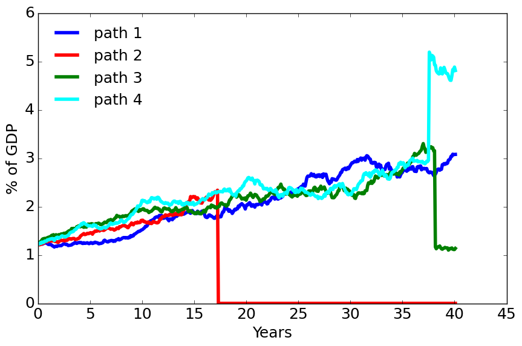
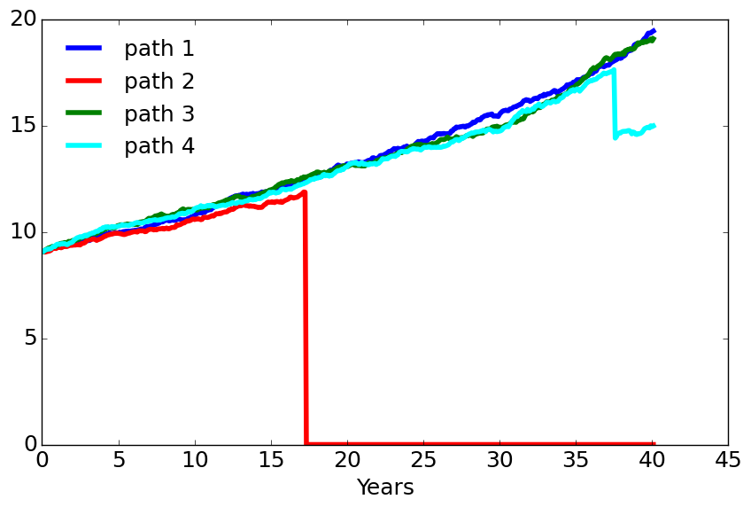
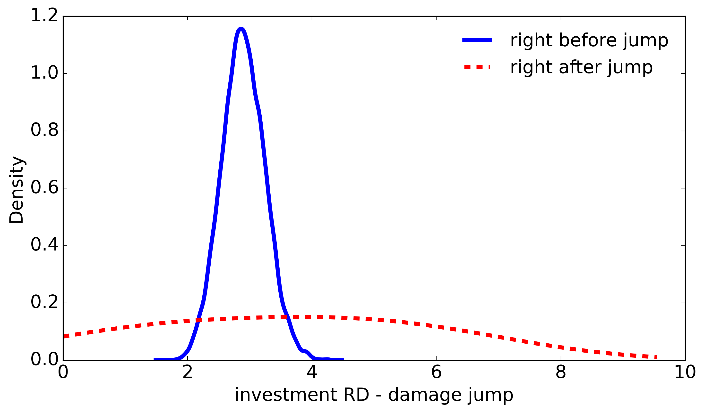
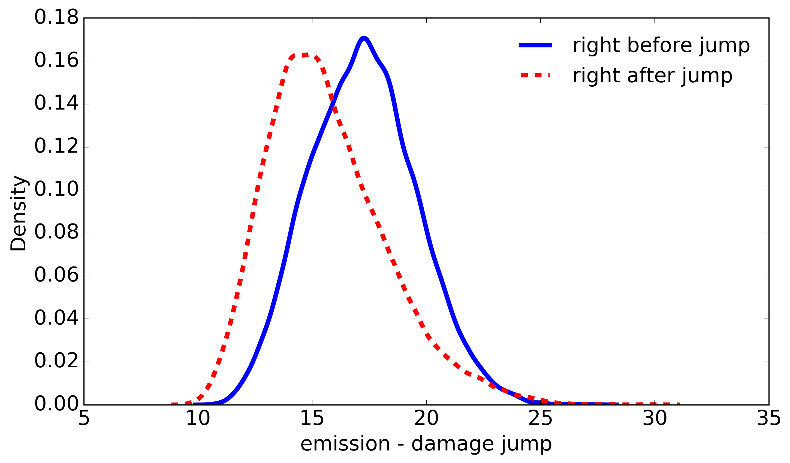

3. Stochastic Simulation#
3.1. Code variable Glossary#
3.1.1. Economic variables#
Symbol |
Description |
Formula |
|---|---|---|
\(c\) |
Consumption |
\(C_t + I_t^k + I_t^r = \alpha K_t \left (1 - \phi_0\left(B_t\right)^{\phi_1} \right)\) |
where \(B_t \overset{\mathrm{def}}{=} \left(1 - \frac {{\mathcal E}_t}{\beta \alpha K_t} \right){\mathbf 1}_{\{{\mathcal E}_t < \beta \alpha K_t\} }\).
3.1.3. Value functions#
Symbol |
Description |
|---|---|
|
Value function pre–tech jump |
|
Value function post–tech jump |
3.1.4. Distortions#
Symbol |
Description |
|---|---|
|
Temp‑anomaly adjustment \(h_y\) |
|
Capital adjustment \(h_k\) |
|
Knowledge‑capital adjustment \(h_r\) |
|
Damage jump adjustment \(g_\ell\) |
|
Tech jump adjustment \(f_L\) |
3.1.5. Probability variables#
Symbol |
Description |
|---|---|
|
Distorted damage‑jump probability \(J_\ell\,g_\ell\) |
|
Distorted tech‑jump probability \(J_L\,f_L\) |
|
True tech‑jump probability \(J_L\) |
|
True damage‑jump probability \(J_\ell\) |
3.1.6. Relative entropy terms#
Term |
Expression |
|---|---|
|
\(\tfrac{1}{2}\,\xi_k\,h_k^2\) |
|
\(\tfrac{1}{2}\,\xi_c\,h_t^2\) |
|
\(\tfrac{1}{2}\,\xi_j\,h_j^2\) |
|
\(\xi_j J_L(1-f+f\log f)\) |
|
\(\xi_d \sum_\ell J_\ell(1-g_\ell+g_\ell\log g_\ell)\) |
3.2. SVRD and SCGW #
By definition,
Uncertainty channel |
SVRD |
SVRD |
R&D investment / output |
R&D investment / output |
|---|---|---|---|---|
baseline (\(\xi = \infty\)) |
41.1 (66%) |
41.1 (43%) |
0.0063 |
0.0063 |
climate uncertainty |
42.0 (68%) |
43.0 (45%) |
0.0066 |
0.0068 |
damage uncertainty |
42.4 (68%) |
43.7 (46%) |
0.0067 |
0.0071 |
productivity uncertainty |
40.3 (65%) |
39.6 (42%) |
0.0061 |
0.0058 |
technology uncertainty |
57.6 (93%) |
77.5 (82%) |
0.0123 |
0.0223 |
all channels |
62.2 |
95.0 |
0.0144 |
0.0335 |
Uncertainty channel |
SCGW |
SCGW |
Emissions |
Emissions |
|---|---|---|---|---|
baseline (\(\xi = \infty\)) |
54.4 (58%) |
54.4 (29%) |
9.32 |
9.32 |
climate uncertainty |
55.7 (59%) |
56.9 (30%) |
9.30 |
9.29 |
damage uncertainty |
56.8 (60%) |
59.2 (32%) |
9.29 |
9.27 |
productivity uncertainty |
54.0 (57%) |
53.4 (29%) |
9.32 |
9.32 |
technology uncertainty |
83.8 (89%) |
133.0 (71%) |
9.09 |
8.79 |
all channels |
94.2 |
186.8 |
9.01 |
8.47 |
bash ./conduction/Postdamage.sh "true" "false" "false" "false" "false"
bash ./conduction/Postdamage_sub.sh "true" "false" "false" "false" "false"
bash ./conduction/Predamage.sh "true" "false" "false" "false" "false"
bash ./conduction/ZeroShockTrajectories_simulate.sh "true" "false" "false" "false"
bash ./conduction/Postdamage.sh "false" "true" "false" "false" "false"
bash ./conduction/Postdamage_sub.sh "false" "true" "false" "false" "false"
bash ./conduction/Predamage.sh "false" "true" "false" "false" "false"
bash ./conduction/ZeroShockTrajectories_simulate.sh "false" "true" "false" "false"
bash ./conduction/Postdamage.sh "false" "false" "true" "false" "false"
bash ./conduction/Postdamage_sub.sh "false" "false" "true" "false" "false"
bash ./conduction/Predamage.sh "false" "false" "true" "false" "false"
bash ./conduction/ZeroShockTrajectories_simulate.sh "false" "false" "true" "false"
bash ./conduction/DateValueReport_table.sh
After the run finishes, the program prints to the job-outs Graph_Table file: MATRIX scrd and MATRIX scgw. To obtain the values reported in Table 2 and Table 3, divide the columns corresponding to scrd and scgw by \(N_0 = 1.0046\).
Source scripts:
3.3. Stochastic pathways #
Figure 7 gives four stochastic pathways for the robustly optimal choice of R&D investment and emissions. The simulations are not intended to be typical but rather are chosen to illustrate some of the possible outcomes. The pathways were generated using the baseline probabilities with the investment and emissions decision rules computed under the less averse specification.


bash ./conduction/Postdamage.sh "true" "false" "false" "false" "false"
bash ./conduction/Postdamage_sub.sh "true" "false" "false" "false" "false"
bash ./conduction/Predamage.sh "true" "false" "false" "false" "false"
bash ./conduction/StocasticTrajectories_simulate.sh "true" "false"
bash ./conduction/StocasticTrajectories_plot.sh "true" "false" "false"
After the run finishes, you should have an output file named in a pattern similar to
path_investment_RD_Aversion Intensity_rho=1.0_delta=0.01.png and
path_emission_Aversion Intensity_rho=1.0_delta=0.01.png.
Source scripts:
3.4. Responses to damage-curve information #
Figure 8 gives densities for the “before and after” emissions and R&D investment responses to knowledge of any of the collection of potential damage curve realizations.


bash ./conduction/Postdamage.sh "true" "false" "false" "false" "false"
bash ./conduction/Postdamage_sub.sh "true" "false" "false" "false" "false"
bash ./conduction/Predamage.sh "true" "false" "false" "false" "false"
bash ./conduction/StocasticTrajectories_simulate.sh "true" "false"
bash ./conduction/StocasticTrajectories_plot.sh "true" "false" "false"
After the run finishes, you should have an output file named in a pattern similar to
path_investment_RD.png and
emission_damage_id1.png.
Source scripts:
3.1.2. Social value variables#
Symbol
Description
scrdSocial value of R&D \(\frac{\left(\frac{dV}{d\hat{r}}\right)_0 {C_0}}{\delta}\)
scgwSocial cost of global warming \(\frac{-\left(\frac{dV}{dy}\right)_0 {C_0}}{\delta}\)